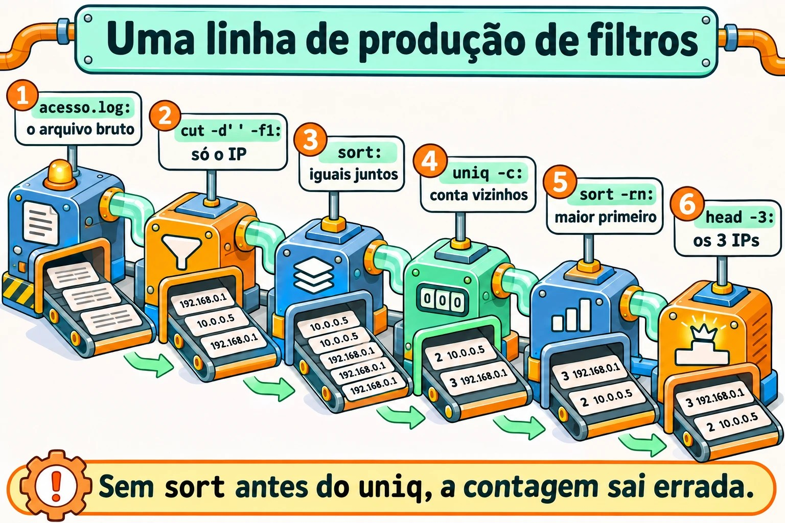
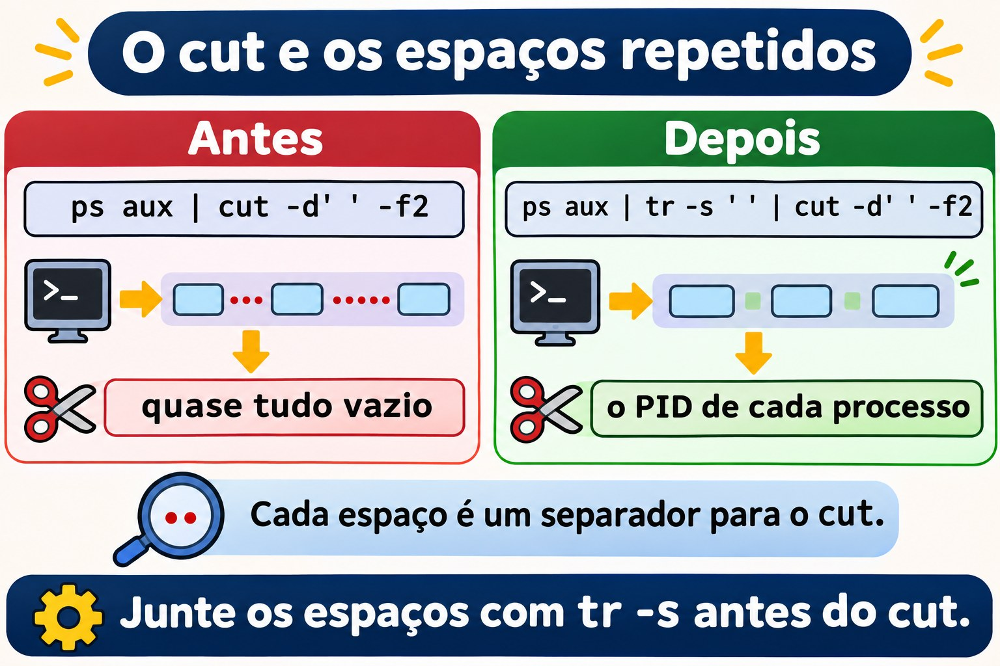
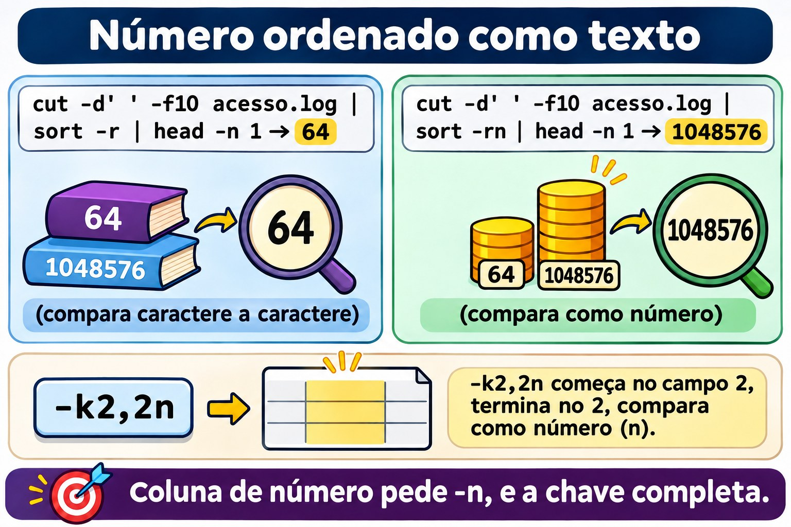
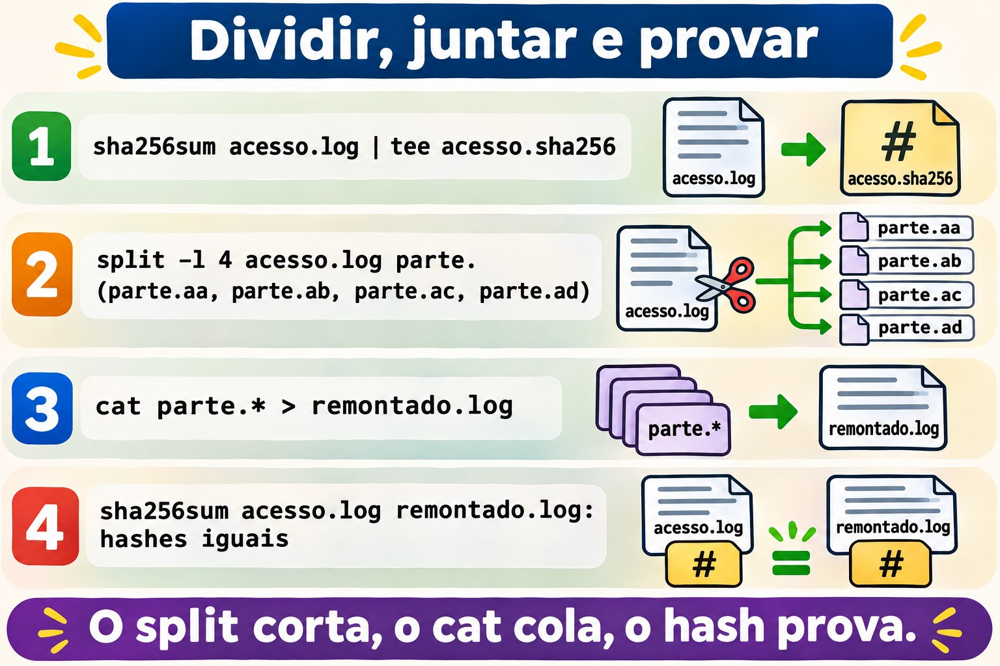
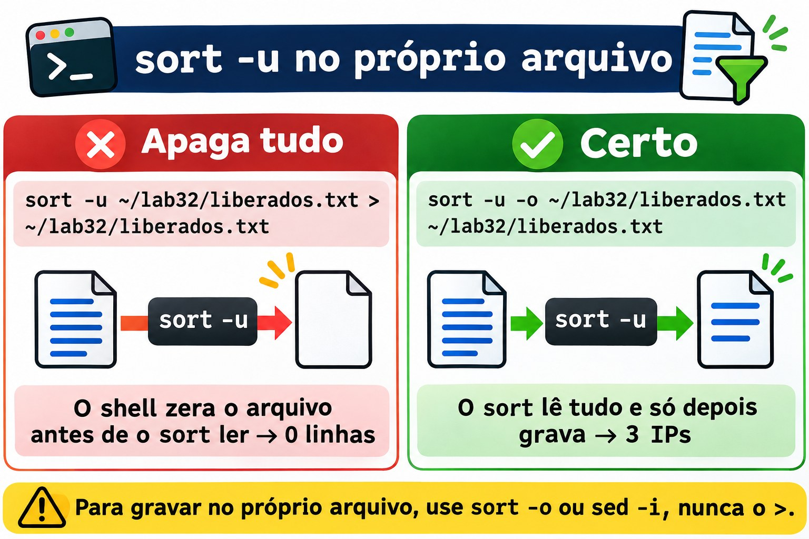

Aula 3.2 · Filtros de texto
Na Aula 3.1 você aprendeu a ligar comandos: quem lê de onde, quem escreve para onde, e como um pipe falha de verdade. Hoje você aprende o que pôr no meio do pipe. Um servidor fala em texto: logs, /etc/passwd, a saída do ps, do ss, do du. A pergunta do chamado quase nunca é "mostre o log". É "quem mais errou a senha", "qual pasta encheu o disco", "quantos erros 500 desde as oito". A resposta é uma linha de filtros: cut recorta colunas, sort ordena, uniq conta, tr troca e limpa caracteres, paste junta, nl numera, split divide, od mostra os bytes que você não vê, e sha256sum prova que dois arquivos são iguais. No fim da aula, um log vira relatório com um script de dez linhas, igual nas duas VMs.
| Ficha | Aula 3.2 |
|---|---|
| Módulo | M3 · Texto e editor, aula 2 de 5 |
| Quando | Semana 7 |
| Ao final você consegue | Recortar colunas com cut, inclusive de saídas com vários espaços; ordenar por número, por tamanho legível e por uma coluna específica com sort -t -k; contar ocorrências com sort | uniq -c | sort -rn; limpar e trocar caracteres com tr, e saber quando ele não serve; juntar linhas e colunas com paste; numerar com nl; dividir e remontar arquivos com split e cat, e provar a integridade com sha256sum; achar um \r de Windows com od; ler logs girados com zcat; transformar um log em relatório |
| Pré-requisitos | Aula 1.5 (head, tail, wc, grep básico); Aula 3.1 (pipes, here-doc, pipefail, ssh deb) |
| Tempo | Cerca de 2h30 |
| Snapshots | m3a2-inicio e m3a2-fim nas duas VMs |
1 · Aquecimento
Três perguntas, de cabeça. Escreva as respostas; o Gabarito confere no fim.
- Um arquivo tem as linhas
b,a,b,a, nessa ordem. Palpite: quantas linhas sobram depois deuniq? - Você tem uma lista de tamanhos:
512M,1.2G,40K. Palpite:sort -npõe o1.2Gno fim? - Um colega manda um script feito no Bloco de Notas. Você roda e recebe
/bin/bash^M: bad interpreter. Palpite: o que é esse^M?
2 · Por que importa
Filtros parecem coisa de curso até a primeira madrugada de incidente:
| O chamado | A resposta errada | O que ela causa |
|---|---|---|
| "Quem está atacando o login do site?" | Abrir o log no less e ir rolando | Vinte minutos para achar o que um sort | uniq -c | sort -rn | head mostra em um segundo. Enquanto isso, o ataque continua |
| "Qual pasta encheu o disco?" | du -sh * | sort -rn | head -1 | Mostra 512M como a maior, e a de 3.5G fica de fora. Alguém apaga a pasta errada |
| "Conta quantos IPs diferentes acessaram hoje" | cut ... | uniq | wc -l | O uniq só junta linhas vizinhas. O número sai inflado, e o relatório vai para o cliente assim |
| "A planilha de usuários veio do Windows, cria as contas" | Ler o CSV direto num laço | Cada nome termina com um \r invisível: useradd cria ana\r, e ninguém consegue entrar como ana |
| "O arquivo de 2 GB chegou corrompido no fornecedor" | Mandar de novo, e de novo | Sem sha256sum dos dois lados, ninguém sabe se o problema é o envio, o disco ou o arquivo de origem |
| "Precisamos dos logs da semana passada" | grep no /var/log/messages | Os dias anteriores estão girados, às vezes em .gz. O grep não lê compactado; o zgrep e o zcat leem |
Quem resolve rápido não sabe mais comandos. Sabe montar a linha certa: recortar, ordenar, contar, nessa ordem.
3 · Modelo mental
Um filtro é um comando que lê linhas na entrada, faz uma coisa só com elas e escreve linhas na saída. Por padrão, nenhum filtro muda o arquivo original; quem grava no próprio arquivo são opções como
sed -iesort -o. Você monta o relatório como uma linha de produção: cada filtro recebe o que o anterior entregou, e o próximo só vê o que sobrou.
A pergunta: "quais IPs mais acessaram?"
acesso.log ─▶ cut -d' ' -f1 ─▶ sort ─▶ uniq -c ─▶ sort -rn ─▶ head -3
(15 linhas) (só o IP) (iguais (conta os (maior (os 3
ficam vizinhos) número primeiros)
juntos) primeiro)
O que passa em cada etapa:
10.1.0.20 10.1.0.20 10.1.0.20 4 10.1.0.20 5 192.168.5.7
10.1.0.31 10.1.0.20 10.1.0.20 2 10.1.0.31 4 10.1.0.20
10.1.0.20 ─▶ 10.1.0.20 ─▶ ... ─▶ 1 10.1.0.45 ─▶ 3 203.0.113.9
192.168.5.7 10.1.0.20 10.1.0.31 5 192.168.5.7 2 10.1.0.31
... 10.1.0.31 ... 3 203.0.113.9 1 10.1.0.45
Por que o sort vem ANTES do uniq:
sem sort: a b b a ─▶ uniq -c ─▶ 1 a 2 b 1 a (o "a" aparece duas vezes)
com sort: a a b b ─▶ uniq -c ─▶ 2 a 2 b (agora conta de verdade)Três perguntas para cada filtro, antes de usá-lo: o que é uma coluna para ele (um separador fixo? qualquer espaço?), o que é igual para ele (byte a byte? segundo o idioma?), e o que é um caractere para ele (um byte? uma letra com acento?). Quase todo resultado errado da aula vem de uma dessas três respostas.


4 · Conceito em camadas
Essencial
O arquivo do lab. Todos os exemplos usam o mesmo log de acesso de um servidor web, que você cria no Passo 0. Uma linha dele, com cada campo separado por um espaço:
192.168.5.7 - - [03/Nov/2026:08:02:30 +0100] "POST /login HTTP/1.1" 401 128
1 2 3 4 5 6 7 8 9 10O campo 1 é o IP, o 7 é o caminho pedido, o 9 é o status HTTP e o 10 é o tamanho da resposta em bytes.
O cut recorta. Por campo, com um separador de um caractere, ou por posição:
cut -d' ' -f1 acesso.log # só o IP
cut -d' ' -f7,9 acesso.log # o caminho e o status
cut -d: -f1,3 /etc/passwd # nome e UID
cut -c1-3 acesso.log # os três primeiros caracteres de cada linha
cut -d: -f1 --complement /etc/passwd # tudo, menos o campo 1 (GNU)Sem -d, o separador é a tabulação. O -f aceita listas (1,3) e faixas (2-4, 5-).
O sort ordena. Por padrão, por texto, segundo o idioma do sistema:
| Opção | O que faz | Exemplo |
|---|---|---|
-n | Por número | sort -n numeros.txt |
-r | Inverte | sort -rn (maior primeiro) |
-h | Por tamanho legível: K, M, G | du -sh * | sort -h |
-u | Só uma de cada linha igual | sort -u nomes.txt |
-t X | O separador de campos é X | sort -t: |
-k N,N | Ordena pelo campo N, só ele | sort -t: -k3,3n /etc/passwd |
-o f | Grava em f, mesmo que seja o arquivo de entrada | sort -o lista.txt lista.txt |
O uniq junta linhas iguais vizinhas. E só vizinhas: por isso quase sempre vem depois de um sort.
| Opção | O que faz |
|---|---|
| (nenhuma) | Uma de cada grupo de linhas iguais seguidas |
-c | Conta quantas havia em cada grupo |
-d | Só as que se repetem |
-u | Só as que aparecem uma vez |
A frase que você vai escrever a vida toda: sort | uniq -c | sort -rn | head. Recorta antes, com cut, e ela responde "o que mais aparece".
O wc, o head e o tail, revistos. wc -l conta linhas; head -n 3 e tail -n 3 pegam as primeiras e as últimas. Um detalhe novo: tail -n +2 começa na linha 2, ou seja, pula o cabeçalho de um CSV.
O tr troca caracteres. Ele só lê a entrada: não aceita nome de arquivo.
tr a-z A-Z < arquivo # minúsculas para maiúsculas
tr -d '\r' < win.txt > unix.txt # apaga o \r do Windows
tr -s ' ' < saida.txt # junta espaços repetidos num só
tr ':' '\n' <<< "$PATH" # um diretório do PATH por linhaIntermediário
O cut e os vários espaços. O cut -d' ' considera cada espaço um separador. Duas colunas separadas por três espaços têm, para ele, dois campos vazios no meio. A saída do ps, do ls -l, do df e o próprio /var/log/secure da Rocky alinham colunas com espaços repetidos. O conserto é juntar os espaços antes:
ps aux | cut -d' ' -f2 # quase tudo vazio
ps aux | tr -s ' ' | cut -d' ' -f2 # o PID de cada processoO log do rsyslog tem uma armadilha de calendário: o dia vem alinhado com espaço, Nov 3 nos dias 1 a 9 e Nov 10 a partir do dia 10. Um cut -d' ' -f5 que funciona no dia 12 pega o campo errado no dia 3. O tr -s ' ' resolve nos dois casos.


O sort por coluna. O -k sem fim (-k3) ordena do campo 3 até o fim da linha; o -k3,3 ordena só pelo campo 3. O tipo vai junto da chave:
sort -t: -k3,3n /etc/passwd # por UID, como número
sort -k1,1nr -k2,2n relatorio.txt # pelo campo 1, maior primeiro; empate, pelo campo 2Sem -n, o 1000 vem antes do 2, porque o caractere 1 vem antes do 2. Ordenar números como texto é o erro mais comum do sort.
O idioma muda a ordem. O sort compara segundo a variável LC_COLLATE (ou LANG). Num sistema em en_US.UTF-8, maiúsculas e minúsculas ficam misturadas (a A b B) e a pontuação quase não conta. No idioma C, a ordem é a dos bytes: todas as maiúsculas antes das minúsculas. Para um resultado que não dependa do servidor, e mais rápido em arquivo grande:
LC_ALL=C sort arquivoO paste junta. Colunas de arquivos diferentes, lado a lado, ou todas as linhas de um arquivo numa só:
paste nomes.txt uids.txt # linha 1 com linha 1, separadas por tabulação
paste -d: nomes.txt uids.txt # o mesmo, separadas por ':'
cut -d: -f1 /etc/passwd | paste -sd, # todos os usuários numa linha, com vírgula
cut -d' ' -f10 acesso.log | paste -sd+ # 512+1024+2048+...: uma conta prontaA última linha vira soma com a aritmética do bash: echo $(( $(cut -d' ' -f10 acesso.log | paste -sd+) )).
O nl numera. Como o cat -n, mas por padrão pula as linhas vazias. nl -ba numera todas. Serve para conversar sobre um arquivo de configuração: "olha a linha 42".
Os logs girados. O logrotate renomeia o log antigo (messages-20261026) e, conforme a configuração, compacta (.gz). Os filtros não leem compactado, mas há versões que leem:
| Para ler | Compactado com | Use |
|---|---|---|
.gz | gzip | zcat, zless, zgrep |
.bz2 | bzip2 | bzcat |
.xz | xz | xzcat |
zcat /var/log/messages-*.gz | grep -c sshdPonte Windows
| No Windows | No Linux | A diferença que importa |
|---|---|---|
| Abrir o CSV no Excel e filtrar | cut, sort, uniq | No Linux, o filtro roda no servidor, sem copiar o arquivo, e vira script |
Sort-Object | sort | O PowerShell ordena objetos por propriedade; o sort ordena texto, e você diz qual coluna e se é número |
Group-Object | sort | uniq -c | O uniq só junta vizinhos: o sort antes é obrigatório |
Select-Object -First 5 | head -n 5 | Igual |
Get-FileHash | sha256sum | O mesmo SHA-256. O hash de um arquivo é igual no Windows e no Linux, se os bytes forem iguais |
Fim de linha CRLF (\r\n) | Fim de linha LF (\n) | O \r sobra no Linux, invisível, no fim de cada linha. É a origem de metade dos "o script não roda" |
| Bloco de Notas mostra acentos | od -c mostra os bytes | No Linux você vê o que tem no arquivo, inclusive o que a tela esconde |
Avançado
O tr não entende acento. O tr do GNU trabalha com bytes. Em UTF-8, ç e ã têm dois bytes cada, e nenhum deles está em a-z. Por isso tr a-z A-Z <<< "ação" devolve AçãO. Para trocar maiúsculas e minúsculas em texto com acento, num idioma UTF-8:
palavra="ação"; echo "${palavra^^}" # AÇÃO, no bash
sed 's/.*/\U&/' <<< "ação" # AÇÃO, no sed do GNUO od mostra o invisível. od -c imprime cada byte como caractere; -An tira a coluna de posição; -tx1 mostra em hexadecimal. É como você descobre o \r do Windows, uma tabulação no lugar de espaços, ou um caractere estranho colado de uma página web:
printf 'ok\r\n' | od -c
# 0000000 o k \r \n
printf 'ação' | od -An -tx1
# 61 c3 a7 c3 a3 6fO cat -A faz parecido, de um jeito mais curto: mostra ^M para o \r, ^I para a tabulação e $ no fim de cada linha.
O split divide; o cat remonta. Para mandar um arquivo grande por um canal que tem limite de tamanho, ou para processar um log enorme em pedaços:
split -b 10M -d backup.tar.gz backup.part. # backup.part.00, .01, .02 ...
split -l 1000 lista.txt lista. # 1000 linhas por pedaço: lista.aa, lista.ab ...
cat backup.part.* > backup-remontado.tar.gzO -d usa números no sufixo. O cat backup.part.* remonta na ordem certa porque o shell expande o * em ordem alfabética, e 00 vem antes de 01.
O hash prova. O sha256sum calcula uma impressão digital de 64 caracteres hexadecimais. Um byte diferente muda o hash inteiro. O -c confere uma lista de hashes gravada antes:
sha256sum backup.tar.gz > backup.sha256 # grava "hash nome"
sha256sum -c backup.sha256 # backup.tar.gz: OKO md5sum e o sha1sum funcionam igual, mas são quebrados para segurança: alguém pode fabricar dois arquivos diferentes com o mesmo hash. Para detectar corrupção acidental ainda servem; para provar que ninguém mexeu no arquivo, use sha256sum ou sha512sum. É o que as distribuições publicam ao lado de cada ISO.
O join, para conhecer. O join junta dois arquivos ordenados pela coluna em comum, como um JOIN de banco de dados: join -t: <(sort -t: -k1,1 a) <(sort -t: -k1,1 b). Aparece quase nunca no dia a dia, porque o awk da Aula 3.4 faz o mesmo com mais controle.
5 · Rocky × Debian
| O quê | rocky-lab | debian-lab | Como conferir |
|---|---|---|---|
cut, sort, uniq, tr, paste, nl, split, od, sha256sum | GNU coreutils 8.32 | GNU coreutils 9.1 | sort --version | head -1 |
Idioma padrão do sort | O que a instalação definiu | O que a instalação definiu | locale; se as duas VMs diferem, a ordem do sort também difere |
awk | gawk | mawk | readlink -f "$(command -v awk)". Importa na Aula 3.4 |
Formato do /var/log/secure e do /var/log/messages | rsyslog, formato tradicional: Nov 3 08:02:30, com o dia alinhado por espaço | Não existem: só o journal | sudo head -n 2 /var/log/secure |
| Formato curto do journal | Nov 03 08:02:30, com zero | Nov 03 08:02:30, com zero | journalctl -n 2 |
| Logs girados | Com data no nome (messages-20261026) | Com número (.1, .2.gz) | ls /var/log/ | head |
dos2unix | Não vem instalado | Não vem instalado | command -v dos2unix |
bc (calculadora) | Pode não estar instalado | Pode não estar instalado | command -v bc. A aula usa $(( )), que é do bash |
A diferença que mais engana é a do log: a mesma pergunta, com o mesmo cut, dá resultado certo num dia e errado no outro, na Rocky. Na Debian, o formato do journal não tem esse problema, mas o log nem é arquivo. O Passo 4 mostra os dois casos.
6 · Lab guiado
Você é o student, na rocky-lab, e alcança a debian-lab pelo ssh deb. Tudo acontece em ~/lab32, nas duas VMs; nenhum passo mexe em arquivo do sistema, e os logs reais só são lidos. O Passo 7 é o desafio da aula, e o relatório que ele gera fica para você conferir depois do reboot.

Passo 0 · Snapshot, caminho e o log do lab
No Proxmox, tire o snapshot m3a2-inicio das duas VMs. Na rocky-lab:
eval "$(ssh-agent -s)"; ssh-add
ssh -o BatchMode=yes deb hostname
mkdir -p ~/lab32; ssh deb 'mkdir -p ~/lab32'
cd ~/lab32
locale | grep -E '^(LANG|LC_COLLATE)='; ssh deb "locale | grep -E '^(LANG|LC_COLLATE)='"Anote o idioma das duas VMs: se forem diferentes, o sort também pode ordenar diferente. Agora o log do lab, com um here-doc entre aspas, para o shell não mexer em nada:
cat > acesso.log <<'EOF'
10.1.0.20 - - [03/Nov/2026:08:00:01 +0100] "GET / HTTP/1.1" 200 5120
10.1.0.31 - - [03/Nov/2026:08:00:15 +0100] "GET /docs HTTP/1.1" 200 2048
10.1.0.20 - - [03/Nov/2026:08:01:02 +0100] "GET /docs HTTP/1.1" 200 2048
192.168.5.7 - - [03/Nov/2026:08:02:30 +0100] "POST /login HTTP/1.1" 401 128
192.168.5.7 - - [03/Nov/2026:08:02:31 +0100] "POST /login HTTP/1.1" 401 128
203.0.113.9 - - [03/Nov/2026:08:03:10 +0100] "GET /admin HTTP/1.1" 403 256
192.168.5.7 - - [03/Nov/2026:08:03:12 +0100] "POST /login HTTP/1.1" 401 128
10.1.0.45 - - [03/Nov/2026:08:04:00 +0100] "GET /relatorio.pdf HTTP/1.1" 200 1048576
203.0.113.9 - - [03/Nov/2026:08:04:20 +0100] "GET /wp-login.php HTTP/1.1" 404 512
10.1.0.20 - - [03/Nov/2026:08:05:05 +0100] "GET /api/status HTTP/1.1" 500 64
192.168.5.7 - - [03/Nov/2026:08:05:40 +0100] "POST /login HTTP/1.1" 401 128
10.1.0.31 - - [03/Nov/2026:08:06:00 +0100] "GET /api/status HTTP/1.1" 500 64
203.0.113.9 - - [03/Nov/2026:08:06:30 +0100] "GET /.env HTTP/1.1" 404 512
192.168.5.7 - - [03/Nov/2026:08:07:01 +0100] "POST /login HTTP/1.1" 200 4096
10.1.0.20 - - [03/Nov/2026:08:07:30 +0100] "GET / HTTP/1.1" 200 5120
EOF
wc -l acesso.log15 acesso.logLeia o arquivo uma vez, com calma. Um IP que tenta /login várias vezes e recebe 401, outro que procura /wp-login.php e /.env num site que nem é WordPress: é exatamente o que você vê num servidor exposto na internet.
Passo 1 · O uniq que não conta
O chefe pergunta: "quantos IPs diferentes acessaram?". Primeiro, só o IP de cada linha:
cut -d' ' -f1 acesso.logQuinze linhas, um IP por linha. Agora a tentativa rápida:
Decida 1 · Você roda cut -d' ' -f1 acesso.log | uniq | wc -l. Que número sai?
- A) 5
- B) 14
- C) 15
- D) 1
Escolha a letra antes de olhar a tabela.
cut -d' ' -f1 acesso.log | uniq | wc -l
cut -d' ' -f1 acesso.log | sort -u | wc -l| Se você marcou | Resultado | Por quê |
|---|---|---|
| A | ❌ Errada | É a resposta certa para a pergunta, mas não é o que esse comando dá. Cinco sai do segundo comando, com sort -u. |
| B | ✅ Certa | O uniq só junta linhas iguais vizinhas. No log, só as linhas 4 e 5 têm o mesmo IP uma embaixo da outra. As outras repetições estão espalhadas, e cada uma conta de novo. |
| C | ❌ Errada | O uniq juntou alguma coisa, sim: as duas linhas seguidas de 192.168.5.7. |
| D | ❌ Errada | O uniq não reduz tudo a uma linha. Ele compara cada linha só com a anterior. |
Para fixar: o uniq sem sort antes é um bug que parece funcionar. Num log de teste ordenado por acaso, ele dá o número certo; no log de produção, não. Para contar diferentes: sort -u | wc -l. Para contar quantas vezes cada um aparece: sort | uniq -c.
Agora a frase da vida toda, com o resultado do Modelo mental:
cut -d' ' -f1 acesso.log | sort | uniq -c | sort -rn | head -n 3 5 192.168.5.7
4 10.1.0.20
3 203.0.113.9O mesmo esqueleto, trocando a coluna, responde outra pergunta. O campo 9 é o status:
cut -d' ' -f9 acesso.log | sort | uniq -c | sort -rn 6 200
4 401
2 500
2 404
1 403A ordem entre o 500 e o 404, que empatam em 2, pode variar: o sort -rn só olha o número. Para desempatar de um jeito fixo, diga a segunda chave: sort -k1,1nr -k2,2n.
Passo 2 · Número ordenado como texto
Qual foi a maior resposta, em bytes? O campo 10 é o tamanho.
Decida 2 · Você roda cut -d' ' -f10 acesso.log | sort -r | head -n 1. O que aparece?
- A)
1048576 - B)
64 - C)
5120 - D) Um erro: o
sortnão ordena números sem-n
Escolha a letra antes de olhar a tabela.
cut -d' ' -f10 acesso.log | sort -r | head -n 1
cut -d' ' -f10 acesso.log | sort -rn | head -n 1| Se você marcou | Resultado | Por quê |
|---|---|---|
| A | ❌ Errada | Esse é o resultado do segundo comando, com -n. |
| B | ✅ Certa | Sem -n, o sort compara caractere a caractere, como num dicionário. O 6 de 64 vem depois do 5 de 5120 e do 1 de 1048576, então, de trás para a frente, o 64 fica em primeiro. |
| C | ❌ Errada | O 5120 perde para o 64 logo no primeiro caractere: 5 vem antes de 6. |
| D | ❌ Errada | O sort ordena qualquer texto. Ele não avisa que você esqueceu o -n; só entrega a ordem errada. |
Para fixar: coluna de número, sort -n, sempre. E o erro não avisa: um relatório com a ordem errada parece um relatório normal.
O mesmo problema, com tamanhos legíveis. Leia-se: qual pasta do /var/log mais ocupa espaço?
sudo du -sh /var/log/* 2>/dev/null | sort -rn | head -n 3
sudo du -sh /var/log/* 2>/dev/null | sort -rh | head -n 3O -n lê só o número e ignora a letra: 900K ganha de 12M. O -h entende K, M e G. Rode o segundo nas duas VMs; ele é a resposta do chamado "qual pasta encheu o disco".
Passo 3 · A coluna certa e o cabeçalho
O RH manda uma planilha:
cat > usuarios.csv <<'EOF'
nome;uid;depto
ana;2001;suporte
bruno;2002;redes
carla;150;suporte
davi;10010;redes
EOFVocê quer a lista por UID, sem o cabeçalho. O tail -n +2 começa na linha 2:
Decida 3 · Você roda tail -n +2 usuarios.csv | sort -t';' -k2 | cut -d';' -f1. Em que ordem saem os nomes?
- A) carla, ana, bruno, davi
- B) davi, carla, ana, bruno
- C) ana, bruno, carla, davi
- D) bruno, davi, ana, carla
Escolha a letra antes de olhar a tabela.
tail -n +2 usuarios.csv | sort -t';' -k2 | cut -d';' -f1 | paste -sd,
tail -n +2 usuarios.csv | sort -t';' -k2,2n | cut -d';' -f1 | paste -sd,| Se você marcou | Resultado | Por quê |
|---|---|---|
| A | ❌ Errada | É a ordem por UID como número, que só sai com o n na chave: -k2,2n. |
| B | ✅ Certa | Sem n, o UID é texto: 10010 vem antes de 150, que vem antes de 2001, porque 1 vem antes de 2 e, depois do 1, 0 vem antes de 5. |
| C | ❌ Errada | Seria a ordem original da planilha. O sort mudou a ordem, só não do jeito que você queria. |
| D | ❌ Errada | Seria a ordem pelo campo 3, o departamento, com -k3. O -k2 começa no campo 2. |
Para fixar: a chave do sort tem três partes, e as três importam: onde começa (-k2), onde termina (,2) e como compara (n). Escreva sempre -k2,2n, nunca só -k2.
Duas chaves, para um relatório por departamento e, dentro dele, por UID:
tail -n +2 usuarios.csv | sort -t';' -k3,3 -k2,2nbruno;2002;redes
davi;10010;redes
carla;150;suporte
ana;2001;suporteO mesmo vale para os arquivos do sistema. Os três usuários com o maior UID, nas duas VMs:
sort -t: -k3,3n /etc/passwd | tail -n 3 | cut -d: -f1,3
ssh deb 'sort -t: -k3,3n /etc/passwd | tail -n 3 | cut -d: -f1,3'Nas duas, o último costuma ser o nobody, com UID 65534. Logo antes vêm os usuários do lab, como a ana, com 2001. Se aparecer outro nome no meio, é uma conta criada por algum pacote: descubra qual com getent passwd nome.


Passo 4 · O log de verdade, com espaços demais
Uma amostra no formato do rsyslog da Rocky, com uma linha do dia 3 e outra do dia 12:
cat > secure.amostra <<'EOF'
Nov 3 08:02:30 rocky-lab sshd[1201]: Failed password for root from 203.0.113.9 port 51022 ssh2
Nov 12 09:15:02 rocky-lab sshd[1388]: Failed password for root from 198.51.100.4 port 40110 ssh2
EOFContando com os olhos, o nome da máquina é a quarta coluna.
Decida 4 · Você roda cut -d' ' -f4 secure.amostra. O que sai?
- A)
rocky-labnas duas linhas - B)
08:02:30na primeira,rocky-labna segunda - C) Uma linha vazia na primeira,
rocky-labna segunda - D) Um erro: o
cutnão aceita linhas com tamanhos diferentes
Escolha a letra antes de olhar a tabela.
cut -d' ' -f4 secure.amostra
tr -s ' ' < secure.amostra | cut -d' ' -f4| Se você marcou | Resultado | Por quê |
|---|---|---|
| A | ❌ Errada | É o resultado do segundo comando, depois do tr -s ' '. |
| B | ✅ Certa | No dia 3, há dois espaços entre Nov e 3. Para o cut, entre eles existe um campo vazio: Nov, vazio, 3, 08:02:30. O campo 4 é a hora. No dia 12, o campo 4 é o nome da máquina. |
| C | ❌ Errada | O campo vazio é o 2, não o 4. |
| D | ❌ Errada | O cut processa cada linha sozinha e nunca reclama de campos: se o campo não existe, a linha sai vazia. |
Para fixar: um script com cut -d' ' em saída alinhada funciona nos dias 10 a 31 e quebra nos dias 1 a 9. Se as colunas são alinhadas com espaços, junte os espaços antes: tr -s ' ' | cut -d' '.
Agora os logs reais, só leitura. Na Rocky, o programa que escreveu as últimas linhas do /var/log/secure:
sudo tail -n 20 /var/log/secure | tr -s ' ' | cut -d' ' -f5 | cut -d'[' -f1 | tr -d ':' | sort | uniq -cNa Debian não há /var/log/secure. O equivalente sai do journal. O formato curto do journalctl escreve o dia com dois dígitos, Nov 03, então o campo não dança:
ssh deb "sudo journalctl -n 20 -o short --no-pager | tr -s ' ' | cut -d' ' -f5 | cut -d'[' -f1 | tr -d ':' | sort | uniq -c"O sudo no ssh deb pode pedir senha. Se pedir, rode o mesmo comando dentro de uma sessão ssh deb. A primeira linha do journalctl às vezes é um cabeçalho (-- Boot ...) ou não tem o mesmo número de campos, e aparece na contagem como um nome estranho. Na Aula 3.3, o grep resolve isso escolhendo só as linhas certas.
E os logs girados. Na Rocky, os dias anteriores ficam em arquivos com data no nome:
ls /var/log/messages* /var/log/secure* 2>/dev/null
sudo cat /var/log/secure-* 2>/dev/null | wc -lSe algum terminar em .gz, troque o cat por zcat. O cat de um arquivo compactado mostra lixo binário, e o wc -l conta lixo.
Passo 5 · O \r que ninguém vê
A planilha do RH chegou de novo, desta vez salva no Windows. O printf imita o que o Bloco de Notas grava:
printf 'ana\r\nbruno\r\n' > win.txt
cat win.txtana
brunoNa tela, tudo normal.
Decida 5 · Você roda grep -c '^ana$' win.txt. Que número sai?
- A)
1 - B)
0 - C)
2 - D) Um erro: o
grepnão lê arquivo do Windows
Escolha a letra antes de olhar a tabela.
grep -c '^ana$' win.txt
od -c win.txt
cat -A win.txt0
0000000 a n a \r \n b r u n o \r \n
0000014
ana^M$
bruno^M$| Se você marcou | Resultado | Por quê |
|---|---|---|
| A | ❌ Errada | Seria o resultado num arquivo do Linux. Aqui, a linha é ana\r: depois do a vem o \r, e não o fim da linha. O $ não casa. |
| B | ✅ Certa | O od -c mostra o \r antes de cada \n. O cat -A mostra o mesmo como ^M. O terminal esconde: o \r só volta o cursor para o começo da linha. |
| C | ❌ Errada | O bruno nem começa com ana. O -c conta linhas que casam, e nenhuma casa. |
| D | ❌ Errada | Para o grep, um arquivo é um arquivo. Ele leu tudo; só não achou o que você pediu. |
Para fixar: quando um texto "igual" não casa, olhe os bytes antes de desconfiar do comando: od -c ou cat -A. O ^M é o mesmo do bad interpreter do Aquecimento.
O conserto, e a prova:
tr -d '\r' < win.txt > unix.txt
grep -c '^ana$' unix.txt
wc -c win.txt unix.txt1
12 win.txt
10 unix.txt
22 totalDois bytes a menos: um \r por linha. O tr só lê a entrada padrão; por isso o <. Agora o limite do tr:
tr a-z A-Z <<< "configuração"
p="configuração"; echo "${p^^}"CONFIGURAçãO
CONFIGURAÇÃOO tr não tocou no ç nem no ã: cada um são dois bytes em UTF-8, fora de a-z. O ${p^^} do bash entende letras. Confira os bytes com printf 'ç' | od -An -tx1: aparecem dois, c3 a7.
Passo 6 · Dividir, juntar e provar
O log vai para um fornecedor por um canal que só aceita arquivos pequenos. Antes de qualquer coisa, a impressão digital:
sha256sum acesso.log | tee acesso.sha256Decida 6 · Você roda split -l 4 acesso.log parte.. Quantos arquivos aparecem, e quantas linhas tem o último?
- A) 3 arquivos; o último com 3 linhas
- B) 4 arquivos; o último com 3 linhas
- C) 4 arquivos com 4 linhas cada; o último completado com linhas vazias
- D) 5 arquivos; o último com 1 linha
Escolha a letra antes de olhar a tabela.
split -l 4 acesso.log parte.
wc -l parte.* 4 parte.aa
4 parte.ab
4 parte.ac
3 parte.ad
15 total| Se você marcou | Resultado | Por quê |
|---|---|---|
| A | ❌ Errada | Três arquivos de 4 linhas guardam 12. Sobram 3, que vão para um quarto arquivo. |
| B | ✅ Certa | 15 linhas, 4 por arquivo: aa, ab e ac com 4, e o ad com as 3 que sobram. |
| C | ❌ Errada | O split nunca inventa conteúdo. Se inventasse, o arquivo remontado seria diferente do original, e o hash acusaria. |
| D | ❌ Errada | Seria com -l 3 e um log de 13 linhas. Faça a conta: 4 × 3 = 12, e 15 − 12 = 3. |
Para fixar: o split corta e o cat cola, sem mudar nenhum byte. Quem prova que nenhum byte mudou é o hash, nunca o tamanho nem o olho.
A remontagem e a prova:
cat parte.* > remontado.log
sha256sum acesso.log remontado.log
cmp acesso.log remontado.log && echo "iguais"
rm parte.* remontado.logOs dois hashes são iguais, e o cmp, que compara byte a byte, não imprime nada e devolve sucesso. Agora o envio de verdade, para a outra VM, com a prova do outro lado:
scp acesso.log acesso.sha256 deb:lab32/
ssh deb 'cd ~/lab32 && sha256sum -c acesso.sha256'acesso.log: OKÉ o mesmo que você faz com uma ISO baixada: o site publica o .sha256, e o sha256sum -c confere.
Por último, o paste e o nl, que entram no relatório do Passo 7:
cut -d' ' -f10 acesso.log | paste -sd+
echo $(( $(cut -d' ' -f10 acesso.log | paste -sd+) ))
cut -d' ' -f7 acesso.log | sort -u | nlO primeiro comando escreve a conta (5120+2048+...); o segundo calcula: 1068928 bytes. O terceiro numera os caminhos diferentes que foram pedidos. Para virar linha a linha, o paste junta duas colunas de arquivos diferentes:
cut -d' ' -f1 acesso.log > ips.txt
cut -d' ' -f9 acesso.log > status.txt
paste -d' ' ips.txt status.txt | head -n 3

Passo 7 · Desafio: o log vira relatório
O chamado: "manda todo dia um resumo do log de acesso". Escreva ~/lab32/relatorio.sh na rocky-lab:
cat > relatorio.sh <<'EOF'
#!/bin/bash
# relatorio.sh: resumo de um log de acesso no formato do lab
set -u
log=${1:?uso: relatorio.sh arquivo.log}
[ -r "$log" ] || { echo "não consigo ler $log" >&2; exit 1; }
echo "Relatório de $log em $(hostname), $(date '+%F %T')"
echo "Requisições: $(wc -l < "$log")"
echo "IPs diferentes: $(cut -d' ' -f1 "$log" | sort -u | wc -l)"
echo "Top 3 IPs:"
cut -d' ' -f1 "$log" | sort | uniq -c | sort -k1,1nr -k2,2 | head -n 3
echo "Por status:"
cut -d' ' -f9 "$log" | sort | uniq -c | sort -k2,2n
echo "Bytes enviados: $(( $(cut -d' ' -f10 "$log" | paste -sd+) ))"
echo "IPs com 401: $(cut -d' ' -f1,9 "$log" | grep ' 401$' | cut -d' ' -f1 | sort -u | paste -sd,)"
EOF
chmod +x relatorio.sh
./relatorio.sh acesso.log | tee "relatorio-$(hostname).txt"Relatório de acesso.log em rocky-lab, 2026-11-...
Requisições: 15
IPs diferentes: 5
Top 3 IPs:
5 192.168.5.7
4 10.1.0.20
3 203.0.113.9
Por status:
6 200
4 401
1 403
2 404
2 500
Bytes enviados: 1068928
IPs com 401: 192.168.5.7Sem pipefail de propósito: o head fecha o pipe depois de três linhas, e num log grande o sort antes dele recebe um SIGPIPE. Com pipefail, esse fim normal contaria como falha.
Agora a Debian. O relatorio.sh vai junto, e na Debian você o chama com sh, sem pensar:
scp relatorio.sh deb:lab32/Decida 7 · Na debian-lab, onde o sh é o dash, você roda sh relatorio.sh acesso.log. O que acontece?
- A) O relatório sai igual ao da Rocky, só com outro nome de máquina
- B) Erro no
$(( )): odashnão faz conta - C) Erro no
${1:?...}: odashnão conhece essa forma - D) O
dashlê o#!/bin/bashe chama obashsozinho
Escolha a letra antes de olhar a tabela.
ssh deb 'cd ~/lab32 && sh relatorio.sh acesso.log | tee "relatorio-$(hostname).txt"'| Se você marcou | Resultado | Por quê |
|---|---|---|
| A | ✅ Certa | Tudo no script é POSIX: $(( )), ${1:?}, [ -r ], $( ). E os filtros são programas externos, iguais para os dois shells. O dash roda sem reclamar. |
| B | ❌ Errada | O $(( )) é POSIX, e o dash faz conta de inteiros. O que ele não tem são extras do bash, como (( )) sozinho ou let. |
| C | ❌ Errada | O ${var:?mensagem} é POSIX e funciona em qualquer sh. |
| D | ❌ Errada | Quando você escreve sh script, quem decide é o sh. O #! só vale quando o script é executado direto, como ./relatorio.sh. Para o dash, a primeira linha é um comentário. |
Para fixar: o #! vale para ./script, nunca para sh script. Funcionou aqui porque o script não usa nada do bash. Com um ${p^^} do Passo 5 ou um <<<, o mesmo comando quebraria na Debian e funcionaria na Rocky.
Compare os dois relatórios, tirando a primeira linha, que tem nome de máquina e hora:
diff <(tail -n +2 relatorio-rocky-lab.txt) <(ssh deb 'tail -n +2 ~/lab32/relatorio-debian-lab.txt') && echo "mesmo resultado"mesmo resultadoO mesmo log, o mesmo script e dois sistemas diferentes dão o mesmo relatório. Se a ordem dos IPs mudasse de uma VM para outra, a culpa seria do idioma (Passo 0), e o conserto, LC_ALL=C no começo do script.
Bônus, só leitura. O mesmo esqueleto, num arquivo real: quantos usuários usam cada shell, nas duas VMs.
cut -d: -f7 /etc/passwd | sort | uniq -c | sort -rn
ssh deb 'cut -d: -f7 /etc/passwd | sort | uniq -c | sort -rn'A Rocky usa /sbin/nologin para as contas de serviço; a Debian, /usr/sbin/nologin. É a mesma ideia com caminho diferente, e o relatório mostra isso em uma linha.
7 · Quebre e conserte
Quebra A · A lista que se apagou sozinha
O cenário: um servidor tem uma lista de IPs liberados para o painel de administração. Toda noite, um script limpa a lista, tirando as repetições, e o firewall lê o resultado. Um dia ninguém mais entra no painel. Monte a lista como ela estava, na rocky-lab:
cat > ~/lab32/liberados.txt <<'EOF'
10.1.0.20
10.1.0.31
10.1.0.20
192.168.1.10
10.1.0.31
EOF
sha256sum ~/lab32/liberados.txtE a linha que o script roda toda noite:
sort -u ~/lab32/liberados.txt > ~/lab32/liberados.txtObserve. Nenhuma mensagem de erro, e o status é 0. Mas:
wc -l ~/lab32/liberados.txt; echo "status: $?"0 /home/student/lab32/liberados.txt
status: 0A lista está vazia. Num firewall que só libera quem está na lista, isso é "ninguém entra".
Diagnostique. Lembre da Aula 3.1: quem abre o arquivo do > é o shell, antes de o comando começar. E o > abre truncando. Veja a ordem com o bash -x, que mostra a linha depois das expansões:
printf 'b\na\nb\n' > ~/lab32/teste.txt
bash -xc 'sort -u ~/lab32/teste.txt > ~/lab32/teste.txt'; wc -c ~/lab32/teste.txt+ sort -u /home/student/lab32/teste.txt
0 /home/student/lab32/teste.txtO bash -x mostra o sort sem o >: o redirecionamento não é argumento do sort, é uma preparação que o shell faz antes de chamá-lo. Quando o sort foi ler, o arquivo já tinha zero bytes. Ele leu um arquivo vazio, ordenou nada e escreveu nada.
Decida A · O conserto. Como o script deve limpar a lista?
- A)
sort -u -o ~/lab32/liberados.txt ~/lab32/liberados.txt - B)
sort -u ~/lab32/liberados.txt >> ~/lab32/liberados.txt - C)
cat ~/lab32/liberados.txt | sort -u > ~/lab32/liberados.txt - D)
sort -u ~/lab32/liberados.txt > /tmp/lista && mv /tmp/lista ~/lab32/liberados.txt
Escolha a letra antes de olhar a tabela.
| Se você marcou | Resultado | Por quê |
|---|---|---|
| A | ✅ Certa | O -o é do sort, não do shell. O sort lê a entrada inteira primeiro e só abre o arquivo de saída no fim, por isso ele aceita o mesmo arquivo dos dois lados. O arquivo continua o mesmo, com o mesmo dono e as mesmas permissões. |
| B | ❌ Errada | O >> não trunca, então nada se apaga, mas a lista ordenada vai para o fim da original. O arquivo cresce a cada noite, e as repetições continuam lá. |
| C | ❌ Errada | O pior dos quatro, porque às vezes funciona. O cat e o > começam juntos, e quem chega primeiro decide. Num arquivo pequeno, quase sempre o > ganha e a lista some; às vezes não, e o teste passa. |
| D | ⚠️ Funciona, mas | O conteúdo sai certo. Mas o mv troca o arquivo por outro, criado pelo student com as permissões padrão: se a lista era root:firewall 640, deixa de ser. E um /tmp/lista fixo colide com outro script que use o mesmo nome. Se precisar desse caminho, use mktemp e confira dono e modo. |
Para fixar: cmd arquivo > arquivo apaga o arquivo antes de o cmd começar, com qualquer comando. Para filtros que escrevem no próprio arquivo, use a opção do programa (sort -o, sed -i), nunca o >.
Conserte.
cat > ~/lab32/liberados.txt <<'EOF'
10.1.0.20
10.1.0.31
10.1.0.20
192.168.1.10
10.1.0.31
EOF
sort -u -o ~/lab32/liberados.txt ~/lab32/liberados.txt
cat ~/lab32/liberados.txt
rm ~/lab32/teste.txt10.1.0.20
10.1.0.31
192.168.1.10Três IPs, sem repetição. Na vida real não há cat > ... <<'EOF' para recriar a lista: ou havia backup, ou snapshot, ou alguém lembra os IPs. Por isso o sha256sum antes de mexer: ele não traz o arquivo de volta, mas prova, depois, se o que você restaurou é igual ao que havia.


Quebra B · A lista de bloqueio que não bloqueia nada
O cenário: a equipe de segurança mandou, de um computador com Windows, a lista de IPs que atacaram outros clientes. A pergunta é: algum deles apareceu no nosso log? O printf imita o arquivo que chegou:
printf '203.0.113.9\r\n198.51.100.4\r\n' > ~/lab32/bloqueio.txt
cd ~/lab32
cat bloqueio.txt
grep -c -F -w -f bloqueio.txt acesso.logO grep -f lê os padrões de um arquivo, um por linha; o -F os trata como texto fixo, sem regex; o -w exige a palavra inteira, para 203.0.113.9 não casar com 203.0.113.90. A Aula 3.3 detalha o grep.
Observe. O cat mostra os dois IPs, limpos. O grep -c responde 0. O relatório para a segurança diria "nenhum IP da lista acessou o servidor". Mas:
grep -c 203.0.113.9 acesso.log3Três acessos, digitando o IP à mão.
Diagnostique. O mesmo IP casa quando você digita e não casa quando vem do arquivo. A diferença está no arquivo:
od -c bloqueio.txt | head -n 2
cat -A bloqueio.txt0000000 2 0 3 . 0 . 1 1 3 . 9 \r \n 1 9 8
0000020 . 5 1 . 1 0 0 . 4 \r \n
203.0.113.9^M$
198.51.100.4^M$O padrão é 203.0.113.9\r. No acesso.log, depois do IP vem um espaço, não um \r. Nenhuma linha casa.
Decida B · O conserto. O que você faz com o bloqueio.txt?
- A)
tr -d '\r' < bloqueio.txt > bloqueio.unixe usar obloqueio.unixnogrep - B) Acrescentar
-iaogrep, para ignorar a diferença - C) Instalar o pacote
dos2unixno servidor e rodardos2unix bloqueio.txt - D)
tr -d '\n' < bloqueio.txt > bloqueio.unix
Escolha a letra antes de olhar a tabela.
| Se você marcou | Resultado | Por quê |
|---|---|---|
| A | ✅ Certa | Tira só o \r e deixa um IP por linha. Ferramenta que já existe nas duas VMs, e o original fica intacto para comparar. |
| B | ❌ Errada | O -i ignora maiúsculas e minúsculas. O \r não é letra; continua lá, e o resultado continua 0. |
| C | ⚠️ Funciona, mas | O dos2unix faz isso e mais, e é ótimo na sua estação de trabalho. Num servidor de cliente, instalar um pacote para tirar um caractere é uma mudança que precisa de autorização, e o tr já resolve. Além disso, ele altera o arquivo original. |
| D | ❌ Errada | Apaga o \n e deixa o \r: os dois IPs viram uma linha só, 203.0.113.9\r198.51.100.4\r. Agora nem o primeiro IP casa sozinho. |
Para fixar: todo arquivo que veio do Windows, da web ou de um e-mail passa por um cat -A | head antes de virar entrada de um script. Um 0 como resposta pode ser o arquivo, não o mundo.
Conserte.
tr -d '\r' < bloqueio.txt > bloqueio.unix
grep -c -F -w -f bloqueio.unix acesso.log
grep -F -w -f bloqueio.unix acesso.log | cut -d' ' -f1,7,9 | sort | uniq -c3
1 203.0.113.9 /.env 404
1 203.0.113.9 /admin 403
1 203.0.113.9 /wp-login.php 404O 203.0.113.9 esteve aqui três vezes, procurando painel e arquivo de senha. O 198.51.100.4 não apareceu. Agora o relatório para a segurança diz a verdade.
A lição
As duas quebras deram uma resposta tranquila e errada: status 0, nenhuma mensagem, e um arquivo vazio ou uma contagem zero. Filtro de texto não avisa quando a entrada está errada; ele processa o que recebeu. Os instrumentos que mostram a verdade são poucos: wc -l e sha256sum antes e depois de mexer num arquivo; od -c ou cat -A quando um texto "igual" não casa; e um teste com um valor que você sabe que existe, como o grep -c 203.0.113.9 à mão. Antes de entregar um zero, prove que o zero é real.
8 · Armadilhas
| Você digita ou vê | O que acontece | O certo |
|---|---|---|
cut ... | uniq -c | Conta só as repetições vizinhas; o mesmo valor aparece várias vezes | cut ... | sort | uniq -c |
sort | uniq -c | sort -r | Num relatório com contagens de tamanhos diferentes (9 e 10), a ordem sai errada | sort -rn |
du -sh * | sort -n | 900K fica acima de 12M: o -n ignora a letra | sort -h |
sort -t: -k3 /etc/passwd | Ordena do campo 3 até o fim da linha, como texto: 1000 antes de 2 | sort -t: -k3,3n |
cut -d' ' -f5 em saída alinhada (ps, /var/log/secure) | Pega a coluna certa em uns dias e a errada em outros | tr -s ' ' | cut -d' ' -f5 |
cut -d', ' -f1 | cut: the delimiter must be a single character | cut -d, -f1 e depois tr -d ' ', ou o awk da Aula 3.4 |
sort -u lista > lista | A lista fica vazia | sort -u -o lista lista |
tr a-z A-Z arquivo | tr: extra operand 'arquivo': o tr só lê a entrada | tr a-z A-Z < arquivo |
tr a-z A-Z em texto com acento | CONFIGURAçãO | ${var^^} no bash, ou sed 's/.*/\U&/' |
| Script ou lista vinda do Windows | bad interpreter: ^M, grep que não casa, usuário ana\r | cat -A arquivo | head antes; tr -d '\r' para consertar |
grep padrão log.2.gz | Procura em bytes compactados e não acha nada | zgrep padrão log.2.gz ou zcat log.2.gz | grep padrão |
Conferir cópia pelo tamanho (ls -l) | Arquivos do mesmo tamanho com bytes diferentes passam | sha256sum dos dois lados, ou sha256sum -c |
md5sum para provar que um arquivo não foi alterado | Detecta corrupção, mas não adulteração: o MD5 está quebrado | sha256sum |
9 · Quiz
Dez perguntas, sem consultar. Escreva a letra ou a resposta de cada uma e só depois abra o Gabarito.
1. Qual é a diferença entre sort | uniq, sort -u e sort | uniq -c?
2. Qual linha mostra os três shells mais usados no /etc/passwd, com a contagem, do mais usado para o menos usado?
- A)
cut -d: -f7 /etc/passwd | uniq -c | sort -rn | head -n 3 - B)
cut -d: -f7 /etc/passwd | sort | uniq -c | sort -rn | head -n 3 - C)
sort -t: -k7 /etc/passwd | uniq -c | head -n 3 - D)
cut -f7 /etc/passwd | sort | uniq -c | sort -r | head -n 3
3. Num arquivo separado por ;, qual é a diferença entre sort -t';' -k2 e sort -t';' -k2,2n?
4. Qual comando tira o \r de um arquivo vindo do Windows?
- A)
tr -d '\r' win.txt > unix.txt - B)
tr -d '\r' < win.txt > unix.txt - C)
cut -d'\r' -f1 win.txt > unix.txt - D)
tr '\r' < win.txt > unix.txt
5. O que cut -d: -f1,7 /etc/passwd mostra? E cut -c1-8 /etc/passwd?
6. Você roda du -sh /var/* | sort -n e a pasta de 12G aparece antes da de 900M. Por quê, e qual é o conserto?
7. Qual comando mostra as últimas linhas de /var/log/messages-20261026.gz sem descompactar o arquivo no disco?
- A)
tail /var/log/messages-20261026.gz - B)
zcat /var/log/messages-20261026.gz | tail - C)
gunzip /var/log/messages-20261026.gz | tail - D)
tar xzf /var/log/messages-20261026.gz | tail
8. split -b 100M -d backup.tar backup. cria quais nomes de arquivo? Como você remonta e prova que o resultado é idêntico ao original?
9. O que printf 'a\nb\nc\n' | paste -sd, mostra? E printf 'a\nb\nc\n' | nl?
10. You must save to /root/bash-users a sorted list containing only the usernames whose login shell is /bin/bash. Which command achieves this?
- A)
grep '/bin/bash$' /etc/passwd | cut -d: -f1 | sort > /root/bash-users - B)
cut -d: -f1 /etc/passwd | grep bash | sort > /root/bash-users - C)
sort /etc/passwd | cut -f1 | grep /bin/bash > /root/bash-users - D)
grep bash /etc/passwd | sort | cut -d: -f7 > /root/bash-users
10 · Flashcards e cola
Para saber de cor
- Filtro lê linhas, faz uma coisa e escreve linhas. Por padrão, nenhum filtro muda o arquivo de entrada (exceções:
sed -i,sort -o). cut -d X -f N: o separador é um caractere, e cada ocorrência dele separa um campo, mesmo repetida. Sem-d, o separador é a tabulação.- Colunas alinhadas com espaços:
tr -s ' 'antes docut. uniqsó junta linhas iguais vizinhas. Sempresortantes.- "O que mais aparece":
sort | uniq -c | sort -rn | head. sortsem opção ordena texto, segundo o idioma. Número:-n. Tamanho legível:-h. Coluna:-t X -k N,N, com o tipo na chave (-k3,3n).LC_ALL=C sort: ordem por bytes, igual em qualquer servidor, e mais rápida.sort -o f fpode;sort f > fapagaf.trsó lê a entrada padrão, troca bytes e não entende acento.-dapaga,-sjunta repetidos.paste a bjunta colunas;paste -sd,junta todas as linhas numa só.nlnumera sem contar as linhas vazias;nl -baconta todas.split -l Nou-b Ncorta;cat partes.* > inteiroremonta; osha256sumprova.od -cecat -Amostram o que a tela esconde:\r(^M), tabulação (^I), fim de linha ($).- Arquivo do Windows: cada linha termina em
\r\n. O\rsobra no Linux. - Logs girados compactados:
zcat,zgrep,zless(.gz);bzcat(.bz2);xzcat(.xz). sha256sumpara provar integridade.md5sumesha1sumsó servem para erro acidental.
Para consultar
| Pergunta | Comando |
|---|---|
| Uma coluna de um arquivo com separador | cut -d: -f1 /etc/passwd |
| Várias colunas | cut -d: -f1,3,7 ou -f2-4 |
| Tudo menos uma coluna | cut -d: -f2 --complement |
| Coluna de saída alinhada | ps aux | tr -s ' ' | cut -d' ' -f2 |
| Quantos diferentes | cut ... | sort -u | wc -l |
| Quantas vezes cada um | cut ... | sort | uniq -c | sort -rn |
| Só os repetidos | sort | uniq -d |
| Só os que aparecem uma vez | sort | uniq -u |
| Ordenar por número, maior primeiro | sort -rn |
Ordenar tamanhos do du | du -sh * | sort -h |
| Ordenar por uma coluna | sort -t: -k3,3n /etc/passwd |
| Duas chaves | sort -t';' -k3,3 -k2,2n |
| Ordem igual em qualquer servidor | LC_ALL=C sort |
| Ordenar o próprio arquivo | sort -o f f |
| Pular o cabeçalho | tail -n +2 arquivo.csv |
| Maiúsculas (sem acento) | tr a-z A-Z < f |
| Maiúsculas com acento | echo "${var^^}" |
Tirar o \r do Windows | tr -d '\r' < win.txt > unix.txt |
| Juntar espaços repetidos | tr -s ' ' |
| Um item por linha | tr ':' '\n' <<< "$PATH" |
| Todas as linhas numa só | paste -sd, |
| Somar uma coluna | echo $(( $(cut ... | paste -sd+) )) |
| Duas colunas lado a lado | paste -d' ' a.txt b.txt |
| Numerar linhas | nl -ba f ou cat -n f |
| Ver os bytes | od -c f; em hexadecimal: od -An -tx1 f |
| Ver caracteres invisíveis | cat -A f |
| Cortar por linhas | split -l 1000 f pedaco. |
| Cortar por tamanho, sufixo numérico | split -b 100M -d f pedaco. |
| Remontar | cat pedaco.* > f |
| Gravar e conferir um hash | sha256sum f > f.sha256; sha256sum -c f.sha256 |
| Comparar dois arquivos byte a byte | cmp a b |
| Ler log compactado | zcat log.gz | ..., zgrep padrão log.gz |
Flashcards
| Frente | Verso |
|---|---|
uniq em b a b a | Quatro linhas: nenhuma é igual à vizinha |
sort | uniq | O mesmo que sort -u |
uniq -c | Prefixa cada linha com quantas vezes ela se repetiu em sequência |
uniq -d / uniq -u | Só as repetidas / só as únicas |
sort de 64, 512, 1048576 sem -n | 1048576, 512, 64 |
sort -h | Entende K, M, G |
-k3 e -k3,3 | Do campo 3 até o fim / só o campo 3 |
sort -t: -k3,3n | /etc/passwd por UID, como número |
sort f > f | f vazio |
cut -d' ' -f4 em Nov 3 08:02:30 host | 08:02:30: o espaço duplo cria um campo vazio |
cut sem -d | Separa por tabulação |
cut -d', ' | Erro: o separador tem que ser um caractere |
tr a-z A-Z arquivo | extra operand: o tr só lê a entrada |
tr a-z A-Z <<< ação | AçãO |
tr -s ' ' | Vários espaços seguidos viram um |
tr -d '\r' | Converte um arquivo do Windows |
^M no cat -A | Um \r |
od -c | Os bytes, como caracteres |
paste -sd+ | 1+2+3: uma conta pronta |
nl e nl -ba | Numera sem as vazias / com as vazias |
tail -n +2 | Da linha 2 até o fim |
split -l 4 num arquivo de 15 linhas | 4 arquivos: aa, ab, ac com 4, ad com 3 |
split -d | Sufixos numéricos: 00, 01, ... |
sha256sum -c lista | Confere os arquivos da lista: OK ou FAILED |
zcat | cat de .gz, sem descompactar no disco |
LC_ALL=C | Ordem por bytes: maiúsculas antes das minúsculas |
11 · Checklist de saída
- [ ] Recorto colunas com
cut, por separador e por posição, e conserto saídas alinhadas comtr -s ' '. - [ ] Respondo "quantos diferentes" e "quais mais aparecem" com
sort,uniqewc, e explico por que osortvem antes douniq. - [ ] Ordeno por número, por tamanho legível e por uma coluna específica, com a chave completa (
-k N,Ne o tipo). - [ ] Escrevo no próprio arquivo sem apagá-lo, com
sort -o. - [ ] Acho um
\rde Windows comod -coucat -A, e tiro comtr -d '\r'. - [ ] Divido e remonto um arquivo com
splitecat, e provo a integridade comsha256sumdos dois lados. - [ ] Transformo um log em relatório com um script que roda igual na Rocky e na Debian.
Último exercício, sem olhar. Tudo na debian-lab: entre com ssh deb e trabalhe em ~/lab32. Sem abrir esta aula:
- Mostre os três usuários com o maior UID, no formato
nome=uid, um por linha. - Grave em
~/lab32/shells.txtquantos usuários usam cada shell, do mais usado para o menos usado. - Crie
~/lab32/win2.txtcom duas linhas,suporteeredes, com fim de linha do Windows. Prove o\rcom um comando, conserte com outro, e prove o conserto com umgrep -cque conte a linharedesexata. - Divida o
~/lab32/acesso.logem pedaços de no máximo 8 linhas, remonte num arquivo novo, prove comsha256sumque é igual ao original e apague os pedaços. - Com uma linha só, mostre o total de bytes enviados apenas nas respostas com status
200.
Só abra o Gabarito depois disso, ou depois de três tentativas.
Reboot e conferência. Reinicie as duas VMs:
ssh -t deb 'sudo reboot'
sudo rebootDepois de voltar, na rocky-lab:
eval "$(ssh-agent -s)"; ssh-add
cd ~/lab32
sha256sum -c acesso.sha256; ssh deb 'cd ~/lab32 && sha256sum -c acesso.sha256'
./relatorio.sh acesso.log | tail -n +2 | diff - <(tail -n +2 relatorio-rocky-lab.txt) && echo "Rocky: igual"
ssh deb 'cd ~/lab32 && sh relatorio.sh acesso.log | tail -n +2 | diff - <(tail -n +2 relatorio-debian-lab.txt) && echo "Debian: igual"'
cat liberados.txtOs dois acesso.log: OK, os dois relatórios iguais ao que você gravou antes do reboot, e a lista da Quebra A com os três IPs. Nada disso dependia de memória: é tudo arquivo e programa, e arquivo sobrevive. Repare na linha da Debian: o <( ) funciona lá porque quem interpreta o comando do ssh é o shell de login do student, o bash. Só o relatorio.sh roda no dash, porque você o chamou com sh.
Snapshots de fechamento. Ficam nas duas VMs: a pasta ~/lab32, com o log, o script e os relatórios; a Aula 3.3 usa o acesso.log de novo. Os arquivos da Aula 3.1 continuam lá, e a /srv/equipe segue em 3770 root:equipe:
sudo find /srv/equipe -maxdepth 0 -printf '%M %m %u:%g %p\n'
ssh -t deb "sudo find /srv/equipe -maxdepth 0 -printf '%M %m %u:%g %p\n'"No nó Proxmox:
qm snapshot 201 m3a2-fim
qm snapshot 202 m3a2-fim12 · Na vida real
Missão da semana, só leitura. Três servidores reais que você administra. Em cada um, sem mudar nada:
- Se o servidor tem um site: os dez IPs que mais acessaram, no log de acesso do servidor web (
/var/log/nginx/access.log,/var/log/httpd/access_logou/var/log/apache2/access.log):sudo cut -d' ' -f1 ARQUIVO | sort | uniq -c | sort -rn | head. Algum é de fora da sua rede e aparece muito mais que os outros? - No mesmo log, a distribuição de status:
sudo cut -d' ' -f9 ARQUIVO | sort | uniq -c | sort -rn. Quantos404,401,403e500, comparados com os200? Confira antes, comsudo head -n 2 ARQUIVO, se o formato tem o status no campo 9. - Onde está o espaço:
sudo du -xsh /var/* 2>/dev/null | sort -rh | head -n 5. O-xnão atravessa para outros sistemas de arquivos montados. Anote as três maiores pastas e o tamanho. - As contas com shell de verdade:
cut -d: -f7 /etc/passwd | sort | uniq -c | sort -rn. Quantas contas têmbashoush? Você sabe de quem é cada uma? A lista sai comgrep -E '(ba)?sh$' /etc/passwd | cut -d: -f1. - Arquivos com fim de linha do Windows onde não deveria haver:
sudo grep -rlI $'\r' /usr/local/bin /usr/local/sbin /etc/cron.d 2>/dev/null. O-Ipula arquivos binários. Cada nome que sair é um script que pode estar falhando sem ninguém saber. - Os logs girados:
ls /var/log/*.gz /var/log/*/*.gz 2>/dev/null | wc -legrep -E '^\s*(compress|rotate|daily|weekly)' /etc/logrotate.conf. Os logs antigos são compactados? Quantas semanas ficam guardadas? Se um incidente for descoberto daqui a um mês, ainda haverá log dele? - O idioma:
locale | grep -E '^(LANG|LC_ALL|LC_COLLATE)='. Se os seus servidores estão em idiomas diferentes, um script comsortpode dar resultados diferentes em cada um.
Para o diário. Uma linha por servidor: nome · top 3 IPs do site · % de 4xx e 5xx · 3 maiores pastas do /var · contas com shell · scripts com \r · logs guardados por quanto tempo · idioma. Ao lado de cada achado estranho, o que você faria e quem precisaria aprovar. Não corrija nada nesta semana: a missão é ver.
Desafio da semana. Adapte o relatorio.sh ao log de verdade de um dos seus servidores web, sem mudar nada no servidor: rode o script a partir da sua pasta pessoal, lendo o log com sudo cat ARQUIVO | ./relatorio.sh /dev/stdin, ou copie um trecho com sudo tail -n 5000 ARQUIVO > ~/amostra.log. Confira, linha por linha, se cada campo (-f1, -f9, -f10) corresponde ao que o formato do seu servidor grava. Se não corresponder, é o tipo de problema que a Aula 3.4 resolve com o awk.
Amanhã, sem olhar. Antes de abrir o terminal, responda de cabeça: por que o uniq precisa do sort antes? Qual é a diferença entre sort -k3 e sort -k3,3n? Por que cut -d' ' falha em saída alinhada, e qual é o conserto? O que o tr não sabe fazer com ção? Como você prova que um arquivo que chegou é igual ao que saiu? Depois, numa das VMs, rode printf 'x\r\n' | od -c e printf '10\n9\n' | sort, e explique cada resultado em voz alta, dizendo em qual VM você está.
13 · Com o DeepTutor
Use o DeepTutor da sua rede local depois do lab, não no lugar dele. Os comandos começam com !:
!quiz Aula 3.2: dez perguntas novas sobrecut,sort,uniq,tr,paste,splite hashes.!explica sort -k: a chave de ordenação por partes, com exemplos de-k2,-k2,2e-k2,2nno mesmo arquivo.!feynman uniq: você explica por que ouniqprecisa dosort, e ele aponta onde ficou vago.!quebra relatório de log: ele descreve um relatório que dá um número errado e te entrega as saídas deod -c,cat -Aewc -l, uma por vez, até você achar a causa.!quiz 3.2: perguntas com filtros, opções e saídas para prever.!cartoes Aula 3.2: os flashcards da seção 10, em ordem de revisão.!erro: cole a linha de filtros que deu resultado estranho, com um trecho da entrada, e ele diz a causa provável e o que olhar.!revisao Aula 3.2: o que rever antes da Aula 3.3, pelo que você errou até agora.
Gabarito comentado
Aquecimento
- Quatro. O
uniqcompara cada linha só com a anterior, e emb a b anenhuma é igual à vizinha. Comsortantes, a entrada viraa a b b, e sobram duas. É o Passo 1. - Não: o
1.2Gvai para o começo. O-nlê só o número e para na letra:1.2,40,512. O-hentende as letras e põe o1.2Gno fim. É o Passo 2. - É o
\rdo fim de linha do Windows. O arquivo tem#!/bin/bash\rna primeira linha, e o sistema procura um programa chamadobash\r, que não existe.cat -A script | head -n 1mostra o^M;tr -d '\r' < script > script.unixconserta. É o Passo 5.
Quiz
sort | uniqesort -udão o mesmo resultado: uma linha de cada valor.sort | uniq -cmostra cada valor uma vez com a contagem de quantas vezes ele apareceu.- B. O A esquece o
sort, e ouniqsó junta vizinhos. O C conta linhas inteiras do/etc/passwd, que nunca se repetem. O D usacut -f7sem-d:, então recorta pela tabulação, que não existe no arquivo, e devolve as linhas inteiras; e osort -rsem-nordena a contagem como texto. -k2ordena do campo 2 até o fim da linha, como texto.-k2,2nordena só pelo campo 2, como número. Com UIDs150e2001, o primeiro põe150depois de10010; o segundo põe na ordem numérica.- B. O A dá
tr: extra operand, porque otrnão aceita nome de arquivo. O C dáthe delimiter must be a single character: dentro das aspas simples,\rsão dois caracteres para ocut. O D dámissing operand: sem-d, otrprecisa de dois conjuntos. - O primeiro mostra o nome e o shell de cada usuário, como
student:/bin/bash. O segundo mostra os oito primeiros caracteres de cada linha, sem olhar campos:student:eroot:x:0. - O
-nlê só o número:12é menor que900, e a letra é ignorada. O conserto ésort -h, que entendeK,MeG. Comsort -rh, a maior fica em primeiro. - B. O A mostra lixo binário: o
tailnão descompacta. O C descompacta o arquivo no disco, troca o.gzpelo arquivo inteiro e não escreve nada na saída. O D é para arquivos.tar; um.gzsimples dá erro. backup.00,backup.01,backup.02e assim por diante, cada um com 100 MB, menos o último. Para remontar:cat backup.?? > backup2.tar(oubackup.*, que o shell expande em ordem). Para provar:sha256sum backup.tar backup2.tar, com os dois hashes iguais; ou, do outro lado de uma transferência,sha256sum -ccom o.sha256gravado antes de cortar.a,b,c. Onlmostra cada linha com um número alinhado à direita e uma tabulação:1 a,2 b,3 c.- Tabela abaixo.
| Se você marcou | Resultado | Por quê |
|---|---|---|
| A | ✅ Certa | O grep escolhe as linhas que terminam em /bin/bash, o cut fica com o nome, o sort ordena, e o > grava só o resultado. O $ impede de pegar um shell como /bin/bash-restrito. |
| B | ❌ Errada | O cut jogou fora o shell antes do grep. O grep bash procura bash no nome do usuário, e o arquivo sai vazio ou com nomes errados. |
| C | ❌ Errada | O cut -f1 sem -d: separa por tabulação e devolve a linha inteira. O arquivo sai com as linhas completas do /etc/passwd, não com nomes. |
| D | ❌ Errada | O campo 7 é o shell: o arquivo fica com /bin/bash repetido, sem nenhum nome. E ordenar antes de recortar ordena pela linha inteira, não pelo que vai ser gravado. |
Último exercício
Na debian-lab, em ~/lab32:
sort -t: -k3,3n /etc/passwd | tail -n 3 | cut -d: -f1,3 | tr : =
cut -d: -f7 /etc/passwd | sort | uniq -c | sort -rn > ~/lab32/shells.txt
cat ~/lab32/shells.txtO primeiro comando mostra, por exemplo, ana=2001, bruno=2002 e nobody=65534, conforme os UIDs da sua VM. Sem o n na chave, a ordem seria de texto, e o nobody poderia nem estar entre os três. O tr : = troca o separador no fim, depois do cut.
printf 'suporte\r\nredes\r\n' > ~/lab32/win2.txt
cat -A ~/lab32/win2.txt
tr -d '\r' < ~/lab32/win2.txt > ~/lab32/win2.unix
grep -c '^redes$' ~/lab32/win2.txt ~/lab32/win2.unixO cat -A mostra suporte^M$ e redes^M$. O grep -c mostra 0 para o win2.txt e 1 para o win2.unix. O od -c também mostra.
cd ~/lab32
split -l 8 acesso.log ped.
cat ped.* > junto.log
sha256sum acesso.log junto.log
rm ped.* junto.logDois pedaços: ped.aa com 8 linhas e ped.ab com 7. Os dois hashes iguais. Se você usou sha256sum -c acesso.sha256 depois de renomear o junto.log, também vale.
echo $(( $(cut -d' ' -f9,10 ~/lab32/acesso.log | grep '^200 ' | cut -d' ' -f2 | paste -sd+) ))O resultado é 1067008: as seis respostas 200 (5120, 2048, 2048, 1048576, 4096 e 5120). O cut -f9,10 deixa só o status e o tamanho, o grep '^200 ' escolhe as linhas que começam com 200 seguido de espaço, e o segundo cut fica com o tamanho. Sem o espaço no grep, um tamanho que começasse com 200 poderia enganar; sem o ^, qualquer linha com 200 no meio entraria.